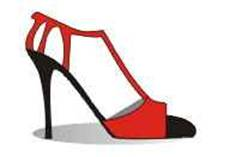

Commentaries on Argentine Tango and Life
by Stephen and Susan BrownTechnique
16 December 2011 — Stephen Brown
"Technique is necessary to start with, but it is also necessary at some
stage for the technique to fall away."
Chögyam Trungpa
Without the Music
8 December 2011 — Stephen Brown
"Without the music there is no dance, no tango, no teacher, no student.
A true teacher can only transmit the teaching the music has left him."
Tete (Pedro Rusconi)
Let's Step on the Ground
7 December 2011 — Stephen Brown
"Tango can be danced in a thousand different ways, but let's step on the ground
first because that is where the energy comes from. Therefore, this is where we
ought to dance to the music." Tete (Pedro Rusconi)
Awaken
6 November 2011 — Stephen Brown
"Your vision will become clear only when you can look into your own heart.
Those who look outside, dream. Those who look inside, awaken." Carl
Gustav Jung
Proof
7 October 2011 — Stephen Brown
"[A]s soon as something seems always to be true, some wise guy will come along
and write something to prove that it's not." Thomas C. Foster in How to
Read Literature Like a Professor
Gloria y Eduardo: 50 Años con el Tango
3 July 2011 — Stephen Brown

Always considered among the best dancers of their generation, Gloria and Eduardo are celebrating more than 50 years in tango. Marking the beginning of their careers in 1960, Gloria and Eduardo performed throughout the world; appeared as featured dancers with the Francisco Canaro, Osvaldo Fresedo and Florindo Sassone orchestras; appeared on the Ed Sullivan Show; and were among the original cast members of the now legendary stage show Tango Argentino. They always maintained their social dance skills and are among the renowned teachers in tango's revival in the 1990s.
Their website,
gloriayeduardo.com,
contains many fantastic images from throughout their lengthy careers in tango.
To see their extensive collection of photographs, notices and other images, go to their
website, gloriayeduardo.com,
then click on Fotos. The first set of images, Galeria 1, will begin showing
automatically. To see the second set of images, select Galeria 2. It also
shows automatically.
Mastering Technique
15 June 2011 — Stephen Brown
"The only reason for mastering technique is to make sure the body does not prevent the soul from expressing itself." La Meri
Tradition
30 May 2011 — Stephen Brown
"Tradition is not the glorification of the ashes but the passing on of the fire." Gustav Mahler
Buying Tango Shoes in Buenos Aires
30 May 2011 — Stephen Brown

For tango dancers visiting Buenos Aires, buying new tango shoes is often a must.
My updated list of the stores in Buenos Aires that specialize in tango shoes is available
at Where to Buy Tango Shoes in Buenos Aires.
Tango de Salon or Tango Milonguero
29 May 2011 — Stephen Brown
Over at Melina's two cents, Melina Sedo considers the confusion that has developed over use of the terms "tango de salon" and "tango milonguero." As Melina (and I) originally understood the term, "tango de salon" was danced socially by milongueros and milongueras at milongas.
According to what Melina learned from the milongueros and milongueras that she met,
"[A]ll of them danced their personal interpretation of tango de salon, allowing
for many kinds of embraces, from very close to a half open V-form. Some of
them danced complex movements with real pivots and even ganchos; some just walked
to the music. ... Tete danced tango de salon as well as El Indio
or Hernan Obispo. ... Tango orillero, tango del centro, tango liso,
tango apilado, tango Villa Urquiza, tango milonguero [were] ... sub-styles of the
tango de salon with one common idea: ... to dance socially."
Because salon-style tango (tango de salon) became synonymous with a hybrid of social tango and stage tango in the United States and parts of Europe, Susana Miller who focused on a limited set of simple movements with small steps began calling what she taught, "tango milonguero" and that term become widely applied to all forms of social tango danced in a close embrace. Those of us who dance and/or teach other social forms of tango, find the labeling misleading and difficult to swallow. As Melina writes, "We still dance tango de salon. Social tango."
For a related set of thoughts, see The
Continuing Conflict Over Tango Styles below.
Myths About Dancing Tango
1 May 2011 — Stephen Brown
Over at Tango and Chaos, Rick McGarrey considers three myths about tango he wishes would go away.
Myth 1: "If it's crowded I dance milonguero style tango, but later in the evening, I like to dance other styles."
Rick: "I don't know any social dancers who wait for the floor to clear so they can dance some other kind of tango. I've never seen it happen in Buenos Aires. I also don't know any good social dancers who say they dance 'milonguero style tango'—or, for that matter, who say they dance any 'style' of tango."
Myth 2: "We dance alternative tango in a milonga with no problems. We control our dancing, and when there's space, we get more creative."
Rick: "Translation: 'If I didn't kick you, I didn't bother you.' This is the rationale of people who do what they want in milongas. They may not bother anyone when it's early and there's no one on the floor, but as it begins to get more crowded, whether they know it or not, they do bother other dancers. As far as academic dancing being more creative, I've heard this argument—but to me, it looks mostly like choreography from workshops."
Myth 3: "There is no room in tango for prejudice, discrimination, or closed minds. Milongas should be open to everyone."
Rick: "Prejudice and discrimination apply to things like race and religion—not to the way someone decides to dance. You can't go into a chess club and insist on playing dominoes. And a beginning basketball player can't expect to walk into a gym and join a pick-up game with college and pro level players. To dance in a milonga you need a certain level of competence, and you need to respect the codigos."
The Continuing Conflict Over Tango Styles
17 April 2011 — Stephen Brown
 In the late 1800s and early 1900s tango split into two styles. One style,
known as "tango liso" was danced in tango salons (indoors). Limited by space,
tango liso was characterized by care to follow the line of dance, smooth movements, a
lack of double-time steps and the use of relatively simple elements that would not
disrupt the line of dance. The other style, known as "tango orillero" was danced
in the streets of poor outlying tenements in Buenos Aires. Not confined by space,
orillero was a rougher style with more highly rhythmic movements that did not show
respect for a line of dance.
In the late 1800s and early 1900s tango split into two styles. One style,
known as "tango liso" was danced in tango salons (indoors). Limited by space,
tango liso was characterized by care to follow the line of dance, smooth movements, a
lack of double-time steps and the use of relatively simple elements that would not
disrupt the line of dance. The other style, known as "tango orillero" was danced
in the streets of poor outlying tenements in Buenos Aires. Not confined by space,
orillero was a rougher style with more highly rhythmic movements that did not show
respect for a line of dance.
Although the two styles had similar origins in canyengue, the class distinctions between the styles created rivalry. Because tango had its origins in working class neighborhoods and orillero seemed closer to canyengue, the more refined tango liso was denounced by some as inauthentic. In return, tango orillero was dismissed as only suitable for individuals of dubious backgrounds.
 By the 1940s and early 50s, tango had evolved into a multiplicity of styles. Tango
liso gradually evolved into what many now call estilo Villa Urquiza, a name that reflects its
onetime prominence in a northern neighborhood of Buenos Aires known as Villa Urquiza. It
was also likely that the Villa Urquiza style was known as "tango de salon" at one time.
Such a name would recognize that the style was danced in most of the salons throughout Buenos
Aires, and it would distinguish the style from orillero, which evolved in the streets.
By the 1940s and early 50s, tango had evolved into a multiplicity of styles. Tango
liso gradually evolved into what many now call estilo Villa Urquiza, a name that reflects its
onetime prominence in a northern neighborhood of Buenos Aires known as Villa Urquiza. It
was also likely that the Villa Urquiza style was known as "tango de salon" at one time.
Such a name would recognize that the style was danced in most of the salons throughout Buenos
Aires, and it would distinguish the style from orillero, which evolved in the streets.
Orillero-style dancers gradually moved from the streets to small indoor clubs. They took their rhythmic sensibilities with them, but modified the dance to fit smaller spaces. As a result, the club and milonguero styles of tango emerged. The club and milonguero styles are substantially similar to each other, mostly reflecting a continuum of personal differences, with club-style tango sharing some of the characteristics of the Villa Urquiza style of tango. (See Styles of Argentine Tango.)
Although the Villa Urquiza, club and milonguero styles of tango were all eventually recognized as tango de salon, the rivalry between styles remained. Refined women refused to dance in the neighborhood clubs where club or milonguero styles of tango were danced, or even to use the double-time steps that characterizes the two styles. Those dancing club and milonguero tango saw themselves as dancing a style of tango that had a straight-line history to the origins of tango without the contamination of middle-class pretensions.
In the late 1940s and early 50s, some of the better dancers of estilo Villa Urquiza also began to develop their skills for tango exhibitions. In doing so, they created tango fantasia, a style that builds on estilo Villa Urquiza but uses embellishments more extensively and adds dramatic poses, ganchos and high boleos, all of which have their roots in some part of tango's history. The creation of tango stage productions led to the development of tango escenario, which integrated fantasia with elements from ballet and other dance forms.
 Tango was mostly dormant from the late 1950s through the mid-1980s. The tango salons were
closed, and the Villa Urquiza style that may have once dominated tango in Buenos Aires was danced
mostly by older couples at family gatherings. Some milongueros continued to dance club and
milonguero style tango at clubs de barrios, but the Argentine government cracked down on the
milonguero life style. Tango stage shows continued to be produced with fantasia as the dominant
form in the more authentic shows.
Tango was mostly dormant from the late 1950s through the mid-1980s. The tango salons were
closed, and the Villa Urquiza style that may have once dominated tango in Buenos Aires was danced
mostly by older couples at family gatherings. Some milongueros continued to dance club and
milonguero style tango at clubs de barrios, but the Argentine government cracked down on the
milonguero life style. Tango stage shows continued to be produced with fantasia as the dominant
form in the more authentic shows.
The stage show Tango Argentino created a revival of interest in tango in the late 1980s and early 1990s, first in Europe and then North America. An enthralled public wanted to learn what they saw in Tango Argentino, which was mostly fantasia. The stage dancers, many of whom had limited backgrounds in the social forms of tango, began teaching what they knew to dancers in Europe and North America, mostly as memorized figures.
Perhaps trying to emphasize the refined social roots of their dance, the Argentine stage dancers frequently identified what they taught as tango de salon, which was translated to salon-style tango in English. This identification created confusion in many tango communities where the term salon-style tango became most closely associated with fantasia and to some extent Villa Urquiza. In Buenos Aires, tango de salon remained associated with all social styles of tango dancing. The common style shared by the two different labels was estilo Villa Urquiza, once the dominant form of tango in Buenos Aires.
In the late 1990s and early 2000s, milongueros who specialized in the club and milonguero styles of tango reemerged from the clubs de barrio. At the same time, many foreigners began visiting Buenos Aires to dance tango. As the two styles met on crowded dance floors, serious conflicts arose.
The conflict between the salon-style tango danced by the foreigners and the tango de salon danced by the milongueros was to some extent practical. The memorized figures with exhibition elements didn't work in crowded venues where the milongueros danced. The densely packed floor demanded improvisational and navigational skills which the visitors lacked. The conditions also required the use of only those dance elements that could be executed safely with others close by, which the visitors didn't understand.
The conflict also had its roots in the social split that occurred in tango's early years. The origin of the milonguero/club style was in orillero, while the origin of the style danced by most foreigners was in tango liso. Many milongueros denounced what the foreigners called salon-style tango as inauthentic stage tango that was poorly danced and unsuitable for use in crowded milongas.
As tango's popularity grew, a new round of teachers emerged in the mid-1990s and early 2000s who taught tango in the styles of the milongueros. The emergence of this group of teachers created a practical and philosophical split in many tango communities. The milonguero-style instructors emphasized learning tango in small rhythmic elements that could be combined improvisationally. The salon-style instructors emphasized refined movements and memorized figures.
Nuevo tango also emerged in the 1990s. As it was originally conceived, nuevo tango was largely a pedagogic approach to tango that emphasized a structural analysis of the Villa Urquiza, fantasia and orillero styles of tango through which the connections between tango's elements could be explored and new combinations and step patterns could be found. Some of the dancers exploring tango's possibilities gradually developed nuevo tango into a style that is danced in an open, loose or elastic embrace with a very upright posture and a great emphasis on the dancers maintaining their own axes. Although the vocabulary was strictly tango, some of the combinations were fresh and unusual.
 By the early 2000s, tango seemed to be splitting into three distinct styles that were very different when taken
to their extremes. These styles included a milonguero/club style that emphasized a close embrace, small
rhythmic movements and improvisation; a fantasia-centered style, mostly known as salon-style tango outside
Buenos Aires, that emphasized quality of movement and was frequently taught as memorized figures; and a
nuevo style that often employed a loose embrace and emphasized the exploration of movements through the
development of a structural understanding of tango's possibilities. Although each of the styles draws
deeply on tango's history, practical and philosophical conflicts emerged as each style was taken to its
extreme. (See Taking Tango Styles to Extremes.)
By the early 2000s, tango seemed to be splitting into three distinct styles that were very different when taken
to their extremes. These styles included a milonguero/club style that emphasized a close embrace, small
rhythmic movements and improvisation; a fantasia-centered style, mostly known as salon-style tango outside
Buenos Aires, that emphasized quality of movement and was frequently taught as memorized figures; and a
nuevo style that often employed a loose embrace and emphasized the exploration of movements through the
development of a structural understanding of tango's possibilities. Although each of the styles draws
deeply on tango's history, practical and philosophical conflicts emerged as each style was taken to its
extreme. (See Taking Tango Styles to Extremes.)
Aside from polarizing comments made by the adherents in each of the three stylistic groups, several other factors have added to the appearance that tango has broken into three distinct styles. Estilo Villa Urquiza, which links the various styles through it commonalities, never recovered from tango's dormancy to regain the prominence it enjoyed in the 1940s and early 50s. Other styles eclipsed Villa Urquiza, and it began to disappear as an older generation of porteños died. As a result, many dancers have difficulty seeing how the diverging styles are part of tango's whole.
In addition, the differing methods for teaching each of the styles has accentuated the differences between the styles. The many dancers whose learning is incomplete within each style have substantially different limitations in their dancing, and those limitations have been interpreted as part of each style. Incomplete learning in milonguero/club tango typically results in dancers who plod along to the music without much quality of movement, sense of form or inventiveness. Incomplete learning in salon-style tango typically results in dancers who execute memorized patterns without rhythm or the ability to navigate. Incomplete learning in the nuevo style typically results in dancers who spin out of control without much rhythm as they explore tango's possibilities. (See On Style and Styles (4), Incomplete Education and Approaches to Learning and Authenticity.)
The overall appearance in the tango world is of three seemingly conflicting styles of tango that are pulling apart because there is no central gravity strong enough to hold them together.
Nuevo Milonguero
13 April 2011 — Stephen Brown
In a recent post over at Tango Voice, the anonymous blogger considers what is meant by the term "nuevo milonguero" which he re-anoints as "tango estilo milonguero nuevo." He reaches the conclusion that nuevo milonguero is a close-embrace variation of nuevo-style tango, which is in direct contradiction of my previously expressed view that nuevo milonguero was created by adding nuevo elements to milonguero-style tango.
His reasoning?
"With its maintained close embrace and small steps (when necessary) Tango Milonguero
is designed for the high density characteristic of milonga dance floors in Buenos Aires.
Tango Nuevo is identified by its focus on the exploration of possibilities for movement,
which by its very nature requires space and freedom of direction in movement. ...
Although the addition of Tango Nuevo elements to Tango Milonguero ... creates an
incompatible mix, the converse mixture is viable. The addition of the characteristic
closed embrace of Tango Milonguero to Tango Nuevo does not limit the latter's ability to
improvise because the milonguero embrace is only part of the continuum of distances and
variations in partner connection that are characteristically passed through in dancing
Tango Nuevo."
Although I agree with Tango Voice's view that nuevo elements can be incompatible with the original purpose of milonguero-style tango (which is dancing in crowded spaces), I do not understand the substitution of logic for history. Those who developed what has become known as "nuevo milonguero" are dancers and instructors closely associated with milonguero-style tango. They added nuevo-inspired steps to their dancing in way that they considered compatible with the movements of milonguero-style tango, if not the unwritten codes for tango de salon in Buenos Aires. Whether their motivation was marketing or a desire to punch up the milonguero style in the face of the nuevo onslaught, I don't know.
Either way, I see Tango Voice as paying insufficient attention to tango's history in the
pursuit of his self-appointed mission "to counter the prevailing tendency to misrepresent tango argentino
in North America."
The Dancer's Expression
9 March 2011 — Stephen Brown
"The Dancer believes that his art has something to say which cannot be expressed
in words or in any other way than by dancing. ... [T]here are times when the
simple dignity of movement can fulfill the function of a volume of words."
Doris Humphrey
Happy New Year
1 January 2011 — Stephen and Susan Brown
 We wish you the best for 2011.
We wish you the best for 2011.
Welcome
2014 Archive
Early Buenos Aires Tango, 6 July 2014
Peach Blossoms, 4 May 2014
Life Hasn't Been the Same, 12 April 2013
2013 Archive
Going, 13 August 2013
Polish Pre-War Tango, 8 May 2013
2012 Archive
Escaping, 24 December 2012
Imagination, 1 December 2012
Narcotango Recording
New Studio Album, 30 September 2012
Videos de Milongas,
Buenos Aires, 2 February 2012
Andrea Missé,
2 January 2012
2011 Archive
Technique,
16 December 2011
Without the Music,
8 December 2011
Let's Step on the Ground,
7 December 2011
Awaken,
6 November 2011
Proof,
7 October 2011
Gloria y Eduardo:
50 Años con el Tango, 3 July 2011
Mastering Technique,
15 June 2011
Tradition,
30 May 2011
Buying Tango Shoes in Buenos Aires,
30 May 2011
Tango de Salon or Tango Milonguero?,
29 May 2011
Myths About Dancing Tango,
1 May 2011
The Continuing Conflict Over Tango Styles,
17 April 2011
Nuevo Milonguero,
13 April 2011
The Dancer's Expression,
9 March 2011
Happy New Year,
1 January 2011
2010 Archive
Carlos Gavito: I Wanted to Dance,
28 August 2010
El Ultimo Bandoneón,
7 August 2010
Viva Las Vegas,
26 July 2010
Principles, Not Rules,
25 April 2010
TangoZapa,
1 January 2010
2009 Archive
Pursuing Happiness,
28 December 2009
Improvising,
28 December 2009
The Commonplace and the Remarkable,
28 December 2009
Keeping It in Neutral,
20 April 2009
2008 Archive
How We Are Together,
7 November 2008
Egotism or Cluelessness?,
26 October 2008
Wanting What You Want,
26 October 2008
Unskilled and Unaware,
4 October 2008
Who Holds the Key?,
7 September 2008
Remembering,
2 September 2008
Professionalism
and Creativity, 1 September 2008
Chasing the
Steps, 18 May 2008
Everyday
Goals, 8 May 2008
So Much More,
6 May 2008
Taking Control
of One's Own Development, 2 May 2008
Some Thoughts
about Leading, 30 April 2008
Gender Imbalance
in Tango, 24 April 2008
It Takes
Two Minds to Tango, 23 April 2008
Being Original,
22 April 2008
Exploring
Movement, 22 April 2008
Kinesthetic
Sense, 21 April 2008
Troileana,
14 April 2008
Close-Embrace-Style
Tango at a Crossroads?, 12 April 2008
On Style
and Nuevo Tango, 4 April 2008
Seduced by
Tango, 25 March 2008
Argentine
Nights, 18 March 2008
Improvising,
7 March 2008
To Dance
Tango, 21 February 2008
Why He Did
It, 06 February 2008
2007 Archive
Blogging:
Truth or Truthiness?, 26 November 2007
What Is a
Master?, 17 November 2007
Orquesta
Color Tango in Dallas (2), 2 October 2007
Orquesta
Color Tango in Dallas, 20 September 2007
All Things,
24 August 2007
Staying Alive,
23 August 2007
Education,
22 August 2007
Finding Our
Own Tango, 6 August 2007
Tango Is
Simple, 1 August 2007
Who We Were
Meant To Be, 1 August 2007
The Woman's
Role in Tango (2), 1 August 2007
On Perfection
and Heaven, 31 July 2007
Practicing
for Effective Dancing, 31 July 2007
The Woman's
Role in Tango, 26 July 2007
The Embrace
and Tango, 24 July 2007
Open or Close
Embrace?, 24 July 2007
Tango Festivals
and Approaches to Learning, 23 July 2007
Learning
the Structure of Tango, 23 July 2007
The Structure
of Tango, 20 July 2007
Approaches
to Learning and Authenticity, 19 July 2007
Authenticity,
19 July 2007
StepMeisters
Abound, 16 July 2007
Invierno
Porteño, 5 June 2007
Tamango on
YouTube, 26 February 2007
Otoño
Porteño, 12 February 2007
Where to
Buy Tango Shoes in Buenos Aires, 12, February 2007
Illegal File
Sharing Doesn't Affect CD Sales, 12, February 2007
The Greatest
Ideas, 25 January 2007
Headlines
and the Human Body, 24 January 2007
2006 Archive
On Differing
Styles and Overtraining, 17 November 2006
Changes in
the Tango Scene, 9 November 2006
Bridge to
the Tango Videos To Be Discontinued, 6 November 2006
What the
Bleep is Tango?, 9 October 2006
An Interview
with Roberto Alvarez of Color Tango, 8 September 2006
Dancing,
31 August 2006
Argentine
Tango: The Way You Dance It, 16 June 2006
Finding Self-Expression
and Freedom in Argentine Tango, 16 June 2006
North American
Tango Festival Update, 14 June 2006
Evolution,
8 June 2006
Becoming
an Expert, 6 March 2006
Destiny,
14 February, 2006
Knowledge
and Wisdom, 1 February 2006
Tango Workers
or Dancers?, 10 January 2006
North American
Tango Festival Update, 1 January 2006
2005 Archive
Are Disagreeable
People Entertaining?, 30 December 2005
Will Your
Dreams Come True in Buenos Aires?, 21 December 2005
North American
Tango Festival Update, 1 December 2005
Dancing Tango
Boosts Brain Function, 21 November 2005
Familiarity
Breeds Comfort, 21 November 2005
The Music
Is Essential 21 November 2005
Dancing to
the Classics, 21 November 2005
Is Argentine
Tango Changing?, 21 November 2005
The Joys
of Simple Tango, 9 November 2005
Finding the
Best Style of Tango, 2 November 2005
North American
Tango Festival Update, 1 September 2005
Developing
Skills for Social Dancing, 12 August 2005
On Style
and Styles (4), 12 August 2005
The Dance,
10 August 2005
On Style
and Styles (3), 10 August 2005
On Style
and Styles (2), 9 August 2005
On Style
and Styles, 8 August 2005
Seduction
or Imposition? (3), 27 July 2005
Seduction
or Imposition? (2), 27 July 2005
Seduction
or Imposition?, 26 July 2005
Hidden Tango
Conversations, 25 July 2005
Finding Connection
(4), 25 July 2005
Finding Connection
(3), 22 July 2005
Finding Connection
(2), 22 July 2005
Finding Connection,
21 July 2005
Incomplete
Education, 19 June 2005
The Invitation
to Dance in Buenos Aires, 11 May 2005
Resolving
Problems, 11 May 2005
Tango to
Evora (Alternative Tango), 19 April 2005
Why We Dance
Tango, 16 March 2005
Hit and Run
Milonga Through Christo's Gates, 28 February 2005
Tango: The
Spirit of Argentina, 25 February 2005
Cultural
Values and Styles of Argentine Tango, 20 February 2005
Tango Is
(Fill in the Blank), 10 February 2005
Asfalto,
4 February 2005
Roles and
Relationships in Argentine Tango, 1 February 2005
North American
Tango Festival Season Underway, 31 January 2005
Milongas
in Buenos Aires Reopening, 28 January 2005
Being A Follower
on Axis in All Styles, 18 January 2005
Dancing to
the Music (4), 1 January 2005
2004 Archive
Dancing to
the Music (3), 30 December 2004
Dancing to
the Music (2), 20 December 2004
Dancing to
the Music, 17 November 2004
El Arranque
on Tango Fusion and Other Approaches, 10 November 2004
A Tango Festival
during Thanksgiving in Austin, TX, 27 October 2004
Robert Duvall
in Dallas, 27 October 2004
How Am I
Not Myself?, 26 October 2004
Some Tango-Fusion
Music to Consider, 12 October 2004
Bravery,
17 September 2004
Becoming
a Good Tango Dancer (4), 9 September 2004
Becoming
a Good Tango Dancer (3), 8 September 2004
Beginners
Taught by Masters, 7 September 2004
Some CDs
for Learning About Tango Music, 23 August 2004
La Yumba,
20 August 2004
Argentine
Tango Survey, 17 August 2004
The Road
Not Taken, 12 August 2004
Becoming
a Good Tango Dancer (2), 9 August 2004
Becoming
a Good Tango Dancer, 6 August 2004
Excellent
Teachers, 16 July 2004
Art as an
Expression of Oneself, 16 July 2004
Tango Terminology,
15 July 2004
What's New?,
22 June 2004
To Embrace,
13 June 2004
Shall We
Dance?, 10 June 2004
Denver TangoFest
Recap, 9 June 2004
Techno Tango,
3 June 2004
Denver TangoFest
Photos, 3 June 2004
No Right
or Wrong in Tango, 3 June 2004
Stretching
Exercises for Tango Dancers (2), 2 June 2004
Intelligent
Dancing, 2 June 2004
Stretching
Exercises for Tango Dancers, 1 June 2004
Tango Takes
to the Air in Colorado, 1 June 2004
Leading and
Following, 28 May 2004
More on Dancing
at Tango Festivals (3), 28 May 2004
Tango Animation
Online, 26 May 2004
More on Dancing
at Tango Festivals (2), 25 May 2004
More on Dancing
at Tango Festivals, 25 May 2004
Inside the
Dream: Celebrating Women Who Dance Tango, 24 May 2004
Inside the
Dream, 24 May 2004
Dancing at
Tango Festivals, 23 May 2004
The Summer
Tango Festival Season Is Upon Us, 23 May 2004
The Best
Teachers, 23 May 2004
Cliquishness
at Milongas, 19 May 2004
Lao-Tzu on
Leadership, 19 May 2004
Teaching
the Inner Essences of Tango, 18 May 2004
What About
Leading?, 18 May 2004
The Gift
of Tango, 17 May 2004
Following
Doesn't Describe the Role, 17 May 2004
Why Biased
Views Are Self Perpetuating, 15 May 2004
Ultimate
Partnering, 14 May 2004
On Seeking
Heaven Rather than Perfection, 14 May 2004
American,
Argentine and International Tango, 14 May 2004
What Appeals
to Today's Tango Dancer, 13 May 2004
Dancing with
Grace, 13 May 2004
Yin and Yang
of Tango, 13 May 2004
Developing
Ease, 13 May 2004
Dancing in
the Music, 13 May 2004
Dancing on
the Beat, 13 May 2004
Open Architecture
and Tango, 13 May 2004
On Language
and Tango, 13 May 2004
Developing
Mastery, 13 May 2004
Developing
Their Own Style, 13 May 2004
A Tender
Embrace, 13 May 2004
Open Embrace,
Soft Embrace, 12 May 2004
Intensifying
the Experience of Tango, 11 May 2004
Why Goldern
Age Music Still Dominates Milongas, 5 May 2004
The Meeting
of Two Personalities, 3 May 2004
Approaches
to Teaching and Learning Tango, 30 April 2004
Taking Tango
Styles to Extremes, 24 April 2004
Rhuummmp
and Ric Tic, 23 April 2004
Dancing Tango
in Tight Spaces, 13 April 2004
Partitioning
the Dance Floor to Accomodate Different Styles, 12 April 2004
The Sweet
Zone of Tango Rhapsody, 11 April 2004
Nostalgia
for the Bohemian Ideal, 6 April 2004
Tango Chooses
You, 5 April 2004